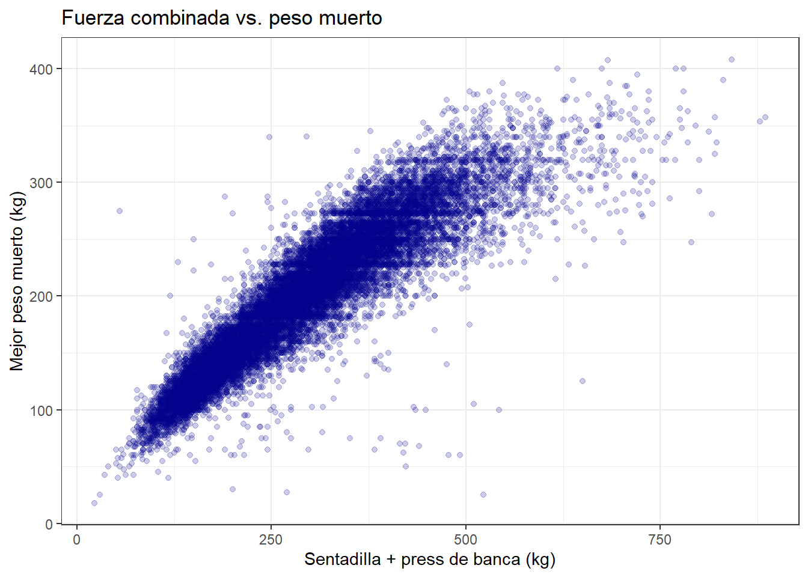

16 Regresión Lineal Simple
La regresión lineal simple (RLS) es un método estadístico que permite estudiar y cuantificar la relación lineal entre una variable explicativa y una variable respuesta mediante el método de mínimos cuadrados ordinarios. En este proyecto se aplica la regresión lineal simple para analizar cómo se relaciona la fuerza combinada de sentadilla y press de banca, considerada como variable explicativa \(x\), con el mejor levantamiento en peso muerto, considerado como variable respuesta \(y\).
¿Existe una relación lineal estadísticamente significativa entre la fuerza combinada de sentadilla y press de banca y el mejor levantamiento en peso muerto de los atletas de powerlifting?
El objetivo principal es determinar la dirección, magnitud y significancia estadística de esta relación, identificando si un aumento en la fuerza combinada está asociado con un incremento en el rendimiento en peso muerto.
16.1 Recapitulando los valores obtenidos:
# Variables seleccionadas
datos_rls <- df_nuevo %>%
select(upper_lower_total, BestDeadliftKg)
# Número de observaciones
nrow(datos_rls)## [1] 18900# Correlación lineal de Pearson
cor(datos_rls$upper_lower_total,
datos_rls$BestDeadliftKg,
method = "pearson")## [1] 0.912459# Diagrama de dispersión con recta de regresión
ggplot(datos_rls,
aes(x = upper_lower_total,
y = BestDeadliftKg)) +
geom_point(alpha = 0.2, color = "darkblue") +
labs(
title = "Fuerza combinada vs. peso muerto",
x = "Sentadilla + press de banca (kg)",
y = "Mejor peso muerto (kg)"
) +
theme_bw()
El coeficiente de correlación lineal de Pearson entre la fuerza combinada de sentadilla y press de banca y el mejor levantamiento en peso muerto fue de \(r=0.912)\), lo que indica una relación lineal positiva y fuerte entre ambas variables.
Esto significa que los atletas con mayores registros de fuerza combinada tienden a alcanzar mayores marcas en peso muerto.
El diagrama de dispersión muestra una tendencia creciente.
16.2 Estimación de minimos cuadrados
# Seleccionar las variables
datos_rls <- df_nuevo %>%
select(upper_lower_total, BestDeadliftKg) %>%
filter(is.finite(upper_lower_total),
is.finite(BestDeadliftKg))
X <- datos_rls$upper_lower_total
Y <- datos_rls$BestDeadliftKg
n <- length(Y)
# 2. Calcular las medias
x_bar <- mean(X)
y_bar <- mean(Y)
# 3. Calcular Sxx y Sxy
Sxx <- sum((X - x_bar)^2)
Sxy <- sum((X - x_bar) * (Y - y_bar))
# 4. Estimar los coeficientes
beta1 <- Sxy / Sxx
beta0 <- y_bar - beta1 * x_bar
# 5. Ajustar el modelo con lm()
modelo_rls <- lm(
BestDeadliftKg ~ upper_lower_total,
data = datos_rls
)
# 6. Presentar resultados en tabla
tabla_parametros <- data.frame(
Parametro = c("Intercepto (beta_0)",
"Pendiente (beta_1)"),
Estimacion = c(beta0, beta1)
)
knitr::kable(
format= "html",
tabla_parametros,
digits = 4,
row.names = FALSE
) %>%
kableExtra::kable_styling(
bootstrap_options = c("striped", "hover"),
full_width = FALSE
)| Parametro | Estimacion |
|---|---|
| Intercepto (beta_0) | 58.1713 |
| Pendiente (beta_1) | 0.4827 |
El modelo ajustado es: \[ \hat y_i = 58.1713+0.4827x_i \]
El intercepto estimado es \(\hat{\beta}_0=58.1713\), lo que indica que cuando la fuerza combinada de sentadilla y press de banca es igual a cero, el valor esperado del mejor levantamiento en peso muerto es de 58.1713 kg.
Sin embargo, dado que este valor de fuerza combinada se encuentra fuera del rango observado, el intercepto no tiene una interpretación practica real en el contexto del estudio.
La pendiente estimada es \(\hat{\beta}_1=0.4827\), lo que indica que, por cada kilogramo adicional en la fuerza combinada de sentadilla y press de banca, se espera que el mejor levantamiento en peso muerto aumente aproximadamente 0.4827 kg, según el modelo de regresión lineal simple ajustado.
16.3 Estimación de la varianza
## estimación de sigma
S2=summary(modelo_rls)$sigma
# 1. Valores ajustados
Y_hat <- fitted(modelo_rls)
# 2. Residuos
e <- residuals(modelo_rls)
# 3. Suma de cuadrados de los errores
SSE <- sum(e^2)
# 4. Grados de libertad
gl <- n - 2
# 5. Estimación de la varianza
MSE <- SSE / gl
# 6. Error estándar de la regresión
RSE <- sqrt(MSE)
# 7. Tabla de resultados
tabla_varianza <- data.frame(
Estadistico = c("SSE", "MSE", "RSE"),
Valor = c(SSE, MSE, RSE)
)
knitr::kable(
format= "html",
tabla_varianza,
digits = 4,
row.names = FALSE
) %>%
kableExtra::kable_styling(
bootstrap_options = c("striped", "hover"),
full_width = FALSE
)| Estadistico | Valor |
|---|---|
| SSE | 12230012.7309 |
| MSE | 647.1591 |
| RSE | 25.4393 |
El cuadrado medio residual obtenido fue \(MSE=647.1591\), que corresponde a la estimación de la varianza de los errores del modelo de regresión lineal simple.Por otra parte, se obtuvo un error estándar de la regresión de \(RSE=25.4393\) kg, el cual representa una estimación de la desviación estándar de los errores del delo.
Este último resultado se expresa en kilogramos, las mismas unidades de la variable respuesta BestDeadliftKg.
16.4 Coeficiente de determinacion
# PASO 4.3: COEFICIENTE DE DETERMINACIÓN
# 1. Suma total de cuadrados
SST <- sum((Y - y_bar)^2)
# 2. Suma de cuadrados de regresión
SSR <- SST - SSE
# 3. Coeficiente de determinación
R2 <- SSR / SST
# 4. Verificar el resultado usando lm()
R2_lm <- summary(modelo_rls)$r.squared
# 5. Mostrar resultados en tabla
tabla_ajuste <- data.frame(
Estadistico = c(
"SST",
"SSR",
"SSE",
"R cuadrado",
"R cuadrado con lm"
),
Valor = c(
SST,
SSR,
SSE,
R2,
R2_lm
)
)
knitr::kable(
format= "html",
tabla_ajuste,
digits = 4,
row.names = FALSE
) %>%
kableExtra::kable_styling(
bootstrap_options = c("striped", "hover"),
full_width = FALSE
)| Estadistico | Valor |
|---|---|
| SST | 73050523.0029 |
| SSR | 60820510.2720 |
| SSE | 12230012.7309 |
| R cuadrado | 0.8326 |
| R cuadrado con lm | 0.8326 |
El coeficiente de determinación obtenido fue \(R^2=0.8326\), lo que indica que aproximadamente el 83.26 % de la variabilidad observada en el mejor levantamiento en peso muerto (BestDeadliftKg) es explicada por el modelo de regresión lineal simple que utiliza la fuerza combinada de sentadilla y press de banca (upper_lower_total) como variable explicativa. Esto implica que el 16.74 % restante de la variabilidad no es explicado por el modelo ajustado.
Este resultado demuestra que el modelo explica una proporción elevada de la variabilidad de la variable respuesta.
16.5 Intervalos de confianza para el modelo de regresión lineal simple
16.5.1 Intervalo de confianza para la pendiente beta_1:
# Nivel de significancia
alpha_ic <- 0.05
# Información del modelo
n_ic <- nobs(modelo_rls)
gl_ic <- df.residual(modelo_rls)
x_ic <- model.frame(modelo_rls)$upper_lower_total
x_bar_ic <- mean(x_ic)
Sxx_ic <- sum((x_ic - x_bar_ic)^2)
# Estimación de sigma cuadrado
sigma2_ic <- sum(resid(modelo_rls)^2) / gl_ic
# Valor crítico t
t_crit_ic <- qt(1 - alpha_ic/2, df = gl_ic)
# Estimación de la pendiente
b1_ic <- unname(coef(modelo_rls)[2])
# Error estándar de beta1
se_b1_ic <- sqrt(sigma2_ic / Sxx_ic)
# Límites del intervalo
LI_b1 <- b1_ic - t_crit_ic * se_b1_ic
LS_b1 <- b1_ic + t_crit_ic * se_b1_ic
# Tabla de resultados
tabla_ic_b1 <- data.frame(
"Parámetro" = "Pendiente (beta1)",
"Estimación" = b1_ic,
"Error estándar" = se_b1_ic,
"Límite inferior" = LI_b1,
"Límite superior" = LS_b1,
check.names = FALSE
)
knitr::kable(
format= "html",
tabla_ic_b1,
digits = 4,
row.names = FALSE
) %>%
kableExtra::kable_styling(
bootstrap_options = c("striped", "hover"),
full_width = FALSE
)| Parámetro | Estimación | Error estándar | Límite inferior | Límite superior |
|---|---|---|---|---|
| Pendiente (beta1) | 0.4827 | 0.0016 | 0.4796 | 0.4858 |
El intervalo de confianza del 95 % para la pendiente es: \[ {\beta_1\in(0.4796,\ 0.4858)} \]
Como ambos límites son positivos y el intervalo no contiene el valor cero, el procedimiento indica que la pendiente es estadísticamente diferente de cero.
16.5.2 Intervalo de confianza para el intercepto beta_0:
b0_ic <- unname(coef(modelo_rls)[1])
# Error estándar del intercepto
se_b0_ic <- sqrt(
sigma2_ic * (1/n_ic + x_bar_ic^2/Sxx_ic)
)
# Límites del intervalo
LI_b0 <- b0_ic - t_crit_ic * se_b0_ic
LS_b0 <- b0_ic + t_crit_ic * se_b0_ic
# Tabla de resultados
tabla_ic_b0 <- data.frame(
"Parámetro" = "Intercepto (beta0)",
"Estimación" = b0_ic,
"Error estándar" = se_b0_ic,
"Límite inferior" = LI_b0,
"Límite superior" = LS_b0,
check.names = FALSE
)
knitr::kable(
format= "html",
tabla_ic_b0,
digits = 4,
row.names = FALSE
) %>%
kableExtra::kable_styling(
bootstrap_options = c("striped", "hover"),
full_width = FALSE
)| Parámetro | Estimación | Error estándar | Límite inferior | Límite superior |
|---|---|---|---|---|
| Intercepto (beta0) | 58.1713 | 0.5017 | 57.1879 | 59.1546 |
El intervalo obtenido es: \[{\beta_0\in(57.1879,\ 59.1546)}\]
Como el intervalo no contiene el cero, el procedimiento indica que el intercepto es significativamente diferente de cero.
Sin embargo, no podemos darle una interpretación práctica directa, porque una fuerza combinada de cero kilogramos no se encuentra dentro del rango observado en nuestro estudio.
16.6 Intervalo de confianza para sigma^2
alpha <- 0.05
n <- nobs(modelo_rls)
sigma <- summary(modelo_rls)$sigma
gl <- n - 2
lim_inf <- gl * sigma^2 / qchisq(1-alpha/2, gl)
lim_sup <- gl * sigma^2 / qchisq(alpha/2, gl)
# Tabla de resultados
tabla_ic_sigma2 <- data.frame(
lim_inf = lim_inf,
sigma2_hat = sigma^2,
lim_sup = lim_sup
)
knitr::kable(
format= "html",
tabla_ic_sigma2,
digits = 4,
row.names = FALSE
) %>%
kableExtra::kable_styling(
bootstrap_options = c("striped", "hover"),
full_width = FALSE
)| lim_inf | sigma2_hat | lim_sup |
|---|---|---|
| 634.3061 | 647.1591 | 660.4086 |
El resultado es: \[{\sigma^2\in(634.3061,\ 660.4086)}\]
Esto significa que, con una confianza del 95 %, estimamos que la varianza poblacional de los errores se encuentra entre 634.3061 y 660.4086 kg², bajo los supuestos de la regresión lineal simple.
16.7 Pruebas de hipótesis
16.7.1 Prueba de hipótesis para beta1
\[ H_0: \beta_1 = 0\\ H_1: \beta_1 \neq 0 \]
alpha <- 0.05
n <- nobs(modelo_rls)
# Variable explicativa utilizada
x <- model.frame(modelo_rls)$upper_lower_total
x_bar <- mean(x)
# Sxx
Sxx <- sum((x - x_bar)^2)
# Pendiente
b1 <- unname(coef(modelo_rls)[2])
# Estimación de sigma
sigma_hat <- summary(modelo_rls)$sigma
# Varianza y error estándar de beta1
var_b1 <- sigma_hat^2 / Sxx
se_b1 <- sqrt(var_b1)
# H0: beta1 = 0 vs H1: beta1 != 0
t_calc <- (b1 - 0) / se_b1
gl <- n - 2
# Valor p bilateral
p_valor <- 2 * pt(-abs(t_calc), df = gl)
# Tabla de resultados
resultados_b1 <- data.frame(
beta1_hat = b1,
se_beta1 = se_b1,
estadistico_t = t_calc,
gl = gl,
p_value = format.pval(p_valor, digits = 4)
)
knitr::kable(
format= "html",
resultados_b1,
digits = 4,
row.names = FALSE
) %>%
kableExtra::kable_styling(
bootstrap_options = c("striped", "hover"),
full_width = FALSE
)| beta1_hat | se_beta1 | estadistico_t | gl | p_value |
|---|---|---|---|---|
| 0.4827 | 0.0016 | 306.5628 | 18898 | < 0.00000000000000022 |
Se realizó una prueba de hipótesis bilateral para determinar si la pendiente del modelo de regresión lineal simple es significativamente diferente de cero. Se obtuvo un estadístico \(t=306.5628\), con 18898 grados de libertad y un valor \(p<0.001\). Dado que el valor p es menor que el nivel de significancia \(\alpha=0.05\), se rechaza la hipótesis nula \(H_0:\beta_1=0\).
Por lo tanto, existe evidencia estadísticamente significativa de una relación lineal entre la fuerza combinada de sentadilla y press de banca y el mejor levantamiento en peso muerto. Además, como la pendiente estimada es positiva (\(\hat{\beta}_1=0.4827\)), se concluye que, según el modelo ajustado, mayores valores de fuerza combinada están asociados con mayores valores esperados de peso muerto.
16.7.2 Prueba de hipótesis para beta0:
\[ H_0: \beta_0 = 0 \\ H_1: \beta_0 \neq 0 \]
b0 <- unname(coef(modelo_rls)[1])
# Varianza y error estándar de beta0
var_b0 <- sigma_hat^2 * (1/n + x_bar^2/Sxx)
se_b0 <- sqrt(var_b0)
# H0: beta0 = 0 vs H1: beta0 != 0
t_calc <- (b0 - 0) / se_b0
gl <- n - 2
# Valor p bilateral
p_valor <- 2 * pt(-abs(t_calc), df = gl)
# Tabla de resultados
resultados_b0 <- data.frame(
beta0_hat = b0,
se_beta0 = se_b0,
estadistico_t = t_calc,
gl = gl,
p_value = format.pval(p_valor, digits = 4)
)
knitr::kable(
format= "html",
resultados_b0,
digits = 4,
row.names = FALSE
) %>%
kableExtra::kable_styling(
bootstrap_options = c("striped", "hover"),
full_width = FALSE
)| beta0_hat | se_beta0 | estadistico_t | gl | p_value |
|---|---|---|---|---|
| 58.1713 | 0.5017 | 115.9534 | 18898 | < 0.00000000000000022 |
Se realizó una prueba de hipótesis bilateral para determinar si el intercepto del modelo de regresión lineal simple es significativamente diferente de cero.Se obtuvo un estadístico \(t=115.9534\), con 18898 grados de libertad y un valor \(p<0.001\). Como el valor p es menor que el nivel de significancia \(\alpha=0.05\), se rechaza la hipótesis nula \(H_0:\beta_0=0\).
Por lo tanto, existe evidencia estadísticamente significativa de que el intercepto poblacional es diferente de cero.
16.7.3 Prueba de hipótesis para sigma^2
\[ H_0: \sigma^2 = \sigma_0^2\\ H_1: \sigma^2 \neq \sigma_0^2 \]
Para la varianza de los errores del modelo se obtuvo una estimación de \(\hat{\sigma}^2=647.1591\) kg² y un intervalo de confianza del 95 % de \((634.3061,\ 660.4086)\) kg². No se realizó una prueba de hipótesis para este parámetro, debido a que no se cuenra con un valor de referencia \(\sigma_0^2\) previamente establecido que permita formular una hipótesis nula realmente fundamentada.
En consecuencia, se presenta la estimación de la varianza y su intervalo de confianza, sujetos al cumplimiento de los supuestos del modelo de regresión lineal simple.